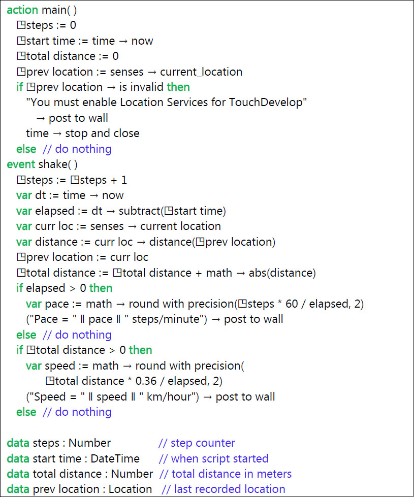
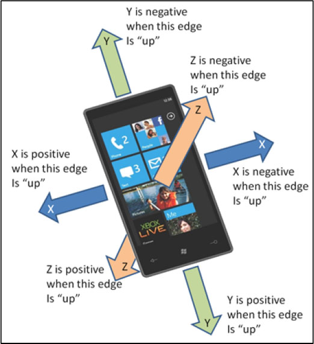
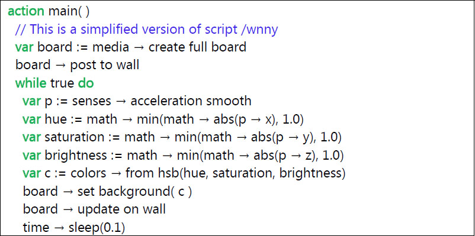
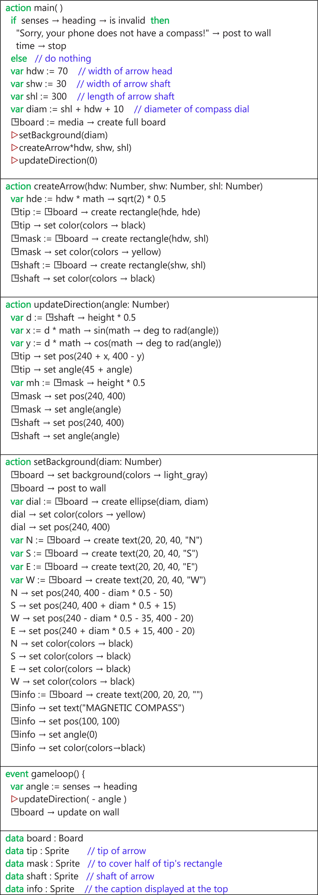
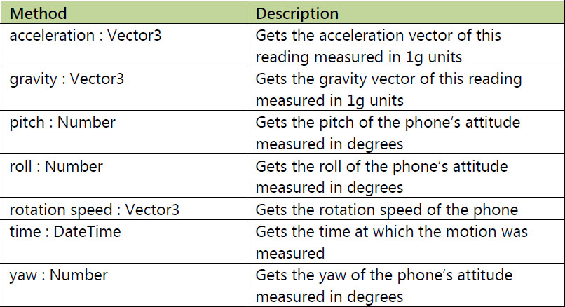
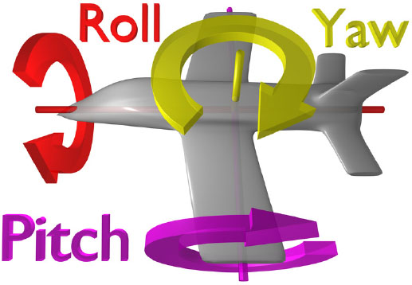

A typical smartphone or tablet contains sensors which track the device’s location, movement and orientation. Scripts can use these sensors in many ways. Sensors can provide input for navigation aids, they can be an integral part of a game, and they can provide simple input to scripts. The possibilities are endless. These sensors are probably absent from laptops and computers, however.
7.1 The sensors
The full complement of sensors supported by TouchDevelop may not be available on your device. The possible sensors are as follows.
- GPS (Global Positioning System), which obtains the phone’s current location on the map.
- Accelerometer, which measures gravitational and acceleration forces experienced by the phone.
- Compass, which returns the direction of magnetic north.
- Gyroscope, which measures the phone’s orientation in 3D space.
A script’s access to the sensors is provided by calls to a variety of API methods and by events associated with the gyroscope and accelerometer. The API methods are listed in Table 7-1; the events are listed in Table 7-2.
Table 7-1
Sensing methods of the senses service
Accelerometer Methods | Description |
|---|---|
senses → acceleration quick : Vector3
| Returns an acceleration averaged over a short time interval |
senses → acceleration smooth : Vector3
| Returns an acceleration averaged over a moderate time interval |
senses → acceleration stable : Vector3
| Returns an acceleration averaged over a time interval of about 0.5 seconds |
senses → is device stable : Boolean
| Returns true if the phone has not moved for about 0.5 seconds |
Compass Methods
|
Description
|
senses → heading : Number
| Returns the angle in degrees of magnetic north compared to the direction that the phone is facing |
Gyroscope Methods
|
Description
|
senses → has gyroscope : Boolean
| Returns true if the phone has a gyroscope |
senses → orientation : Vector3
| Obtains the current orientation in degrees with respect to the X, Y, Z axes, if available. |
senses → rotation speed : Vector3
| Returns the rotational speed in degrees per second about each of the X, Y, Z axes |
Motion Methods
|
Description
|
senses → motion : Boolean
| Returns the phone’s current motion, combining readings from accelerometer, compass and gyroscope |
7.2 Sensor-driven events
If the device is shaken, the accelerometer records some rapidly changing readings. If the amplitude of the shaking exceeds a certain threshold, a shake event is triggered. A script can use the event to effect an action, such as pausing the playback of an audio recording.
The device’s software may be using the gyroscope to determine the screen’s orientation, and so to choose between portrait mode or landscape mode for presentation of information. Several possibilities for the orientation can be transmitted to a TouchDevelop script via the event mechanism.
The shake event and the phone orientation events are listed in Table 7-2.
Table 7-2
Sensor events
Event | Description |
|---|---|
shake
| Triggered when the phone is shaken |
phone face up
| Triggered when the device is turned so that it is face up |
phone face down
| Triggered when the device is turned so that it is face down |
phone portrait
| Triggered when the device is turned so the screen in portrait mode (such as when the device is vertical) |
phone landscape left
| Triggered when the device is turned so that its left side is facing down |
phone landscape right
| Triggered when the device is turned so that its right side is facing down |
7.2.1 Example script: A pedometer (/jbpv)
If you carry your smartphone with you when jogging or walking briskly, the phone’s sensors should trigger a shake event for each step taken. A simple script can record how many steps are taken, from which the number of steps per minute can be computed. By accessing the GPS location, the average speed can be determined too. However the script cannot simply use the starting location and ending location to determine the distance traveled, because that would give only the straight line distance between the two points. Determining the actual distance traveled requires checking the GPS location more frequently and summing lots of little distances.
The code for a simple Pedometer program is shown in Figure 7-1. Note that you will need to enable Location Services in TouchDevelop’s settings for the script to work.
7.3 Accelerometer
Most Windows phones possess a device which measures the forces on a small mass. When the phone is held perfectly still, the only force will be gravity. If the phone is shaken or moved, the forces which are measured will combine acceleration with gravity. The measuring device is therefore known as an accelerometer.
Gravitational force is always down, towards the ground. However, acceleration can be in any direction in three dimensional space. The accelerometer therefore returns a vector to show the current force in each of the three dimensions. In the TouchDevelop API, that vector is provided as a value with the Vector3 datatype.

Figure 7-1
A simple pedometer program (/jbpv)
The senses methods which access the accelerometer are listed in Table 7-1. Three methods are provided for finding the phone’s acceleration. They are necessary because nothing in real life is perfectly motionless. Any sound or vibration induces small high frequency accelerations in an object. Obtaining steady repeatable readings requires averaging out the measurements over a period of time. Longer periods of time will yield very consistent measurements, but the script has to wait until that period has elapsed before a reading is available.
Long waits would be inappropriate for a game where the player is controlling the actions by moving the phone. Note that the accelerations measured by these three methods include gravitational force. A value of (0.0, 0.0, 0.0) for the acceleration vector could only mean that the phone is in free fall.
7.3.1 Direction of acceleration forces
The three components of a Vector3 value are accessed via the three methods x, y and z. They correspond to the X, Y and Z dimensions, as in Figure 7-2.
As can be seen in the figure, when the phone is lying flat on the table, the vector has a value of the form (0.0, 0.0, k) where k is some negative number. The value of k depends on what units are used for measuring a force. The TouchDevelop API reports the force in g (gravitational) units. Any object which is perfectly stationary is subjected to a force of 1g in the downwards direction. In other words, the Vector3 value returned by the accelerometer should be exactly (0.0, 0.0, -1.0) when the phone is kept still and lying flat on a table with the screen facing up.
When the phone is held vertically with its bottom edge on the table, the Vector3 value should be (0.0, -1.0, 0.0). If we turn the phone upside-down so that the top edge is on the table, the value should be (0.0, 1.0, 0.0).
A short script to show the values of these components is the following.
action
main( )
var
acc := senses → acceleration quick
("Z component = " || acc → z) → post to wall
("Y component = " || acc → y) → post to wall
("X component = " || acc → x) → post to wall

Figure 7-2
Accelerometer orientation
Typical output from the script looks similar to the following:
X component = 0.0092241987586021423
Y component = -0.03411596268415451
Z component = -0.99446910619735718
The values are close to 0.0, 0.0 and -1.0. The discrepancies show that the accelerometer may have some measuring error and that the phone is probably not located on a perfectly horizontal surface.
7.3.2 Example script: a light show (/tbcb)
This script simply converts movements of the phone into colors, and these colors are applied to the entire screen. The script is shown in Figure 7-3.
The script maps the X, Y and Z components of an acceleration reading to three color components. However it is not a simple mapping. The script needs to ensure that the three color components are kept within the 0.0 to 1.0 range. Secondly, the RGB components of a color do not have equal importance to the human eye. A normal eye is much less responsive to the color blue than to red or green. To distribute the perceived colors out a bit more evenly among the possibilities, an alternative color representation known as HSB (short for hue, saturation and brightness) is used.
The script takes a reading from the accelerometer every 0.1 seconds and uses it to set the screen’s color.
An equivalent version of this script is published on the TouchDevelop website as /wnny. The wnny script uses the gameloop event to trigger a reading of the accelerometer every 50 milliseconds, and it calls an action in a library script to convert a Vector3 value into a Color value.
Another sample script which uses the accelerometer is the simplified airplane attitude indicator, published as /akgk. The current orientation of the phone with respect to gravity is determined by checking the result from the accelerometer. That is used to display an artificial horizon on the screen, simulating what a pilot would see with an attitude indicator in an airplane.

Figure 7-3
Accelerometer colors simplified (script /tbcb)
7.4 Compass
Most smartphones contain a built-in compass which reports the phone’s orientation with respect to magnetic north. The methods of the senses resource which directly use the compass are listed in Table 7-1.
7.4.1 Example script: a magnetic compass (/drvu)
As a demonstration of the usage of the compass sensor, the script provided below simulates an old-fashioned magnetic compass, where the compass’s needle always points north.
Most of the script is concerned with displaying an arrow, which represents the needle, on top of a solid circle which represents the dial. The important statement in the script concerned with the sensor is the following.
var
angle := senses → heading // get heading in degrees
The value returned by senses→heading is, as the API documentation says, “the compass heading, in degrees, measured clockwise from the Earth’s magnetic north”. A value of 15, say, means that the magnetic north should be 15 degrees to the left of the direction in which the phone is currently pointing.
The script is shown in Figure 7-4. Most of the code is concerned with drawing a representation of a large arrow.
7.5 Gyroscope
Many Windows phones also possess a gyroscope. This is a device which reports on whether the phone is being rotated – rotated in absolutely any orientation. Rotation is measured as an angular velocity, which is rotation speed in degrees per second about an axis in three dimensional space. The API methods to access the gyroscope are listed in Table 7-1.
The angular velocity is reported by the TouchDevelop API as a Vector3 value reporting rotation in three dimensional space. A value of (360, 0, 0) indicates a rotational speed of one revolution per second about the X axis in a clockwise direction, and similarly for the Y and Z axes. Given a reading of (a, b, c), the combined rotational speed can be computed as √(a
2 + b
2 + c
2) measured about some axis in 3D space.
The value returned by the rotation speed method measures which axis the phone is being rotated about, and how fast. For example, if the X and Y components of the angular velocity are much smaller than the Z component, then the phone is likely to be lying flat on a table and being spun around (because the Z axis is perpendicular to the phone’s screen).

Figure 7-4
Magnetic compass script (script /drvu)
7.6 Motion
Perhaps there is a use for gyroscope readings in a game which requires spinning the device around? However, it is much more likely that the gyroscope is useful when used in combination with the accelerometer and compass. The following code snippet extracts a combined reading from all three sensors.
var
motion := senses → motion
if
motion → is invalid
then
"Your device does not have motion capability!" → post to wall
time →stop
else // do nothing
The value obtained in the first statement has the Motion datatype. Methods associated with the Motion datatype allow various component readingsto be extracted. The methods provided by the Motion type are summarized in Figure 7-5 (The is invalid and post to wall methods are omitted).
One very important feature is that the software can separate the force on the accelerometer into the force caused by gravity and the additional force caused by acceleration. In other words, the acceleration method returns a true acceleration and does not include a gravitational force component. The force of gravity should always be equal to 1g but its direction depends on which way the device is oriented.
Another important feature of a Motion value is that an accurate value for the device’s orientation can be obtained for the time when the value was captured. The direction of the Vector3 value returned by senses→acceleration quick would usually be adequate, but it can be disturbed by waving the device around. The true orientation of the device is known as its attitude. The three methods named pitch, roll and yaw report the phone’s attitude measured in degrees, respectively relative to three orthogonal axes. These axes are diagrammed in Figure 7-6 if your smartphone is substituted for the plane. If the phone is held vertically and facing magnetic north, the values for the yaw, pitch and roll should all be zero. Any rotations relative to that starting position will cause the values to become non-zero.

Figure 7-5
Methods of the Motion type
Note that the current orientation of the phone can be obtained with the senses→ orientation method.

Figure 7-6
Yaw, pitch and roll
Note
The image has been copied from the Wikipedia Commons, a freely licensed media file repository.